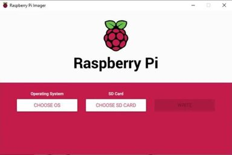

Serveur Raspberry Pi
Raspberry Pi Serveur
Projet PersonnelObjectif
Configuration d'un serveur web autonome sur Raspberry Pi avec conteneurisation Docker pour héberger mes projets.
Réalisations
- Installation Ubuntu Server
- Configuration Docker
- Mise en place serveur web
- Accès SSH sécurisé
Technologies
Raspberry Pi
Ubuntu
Docker
SSH